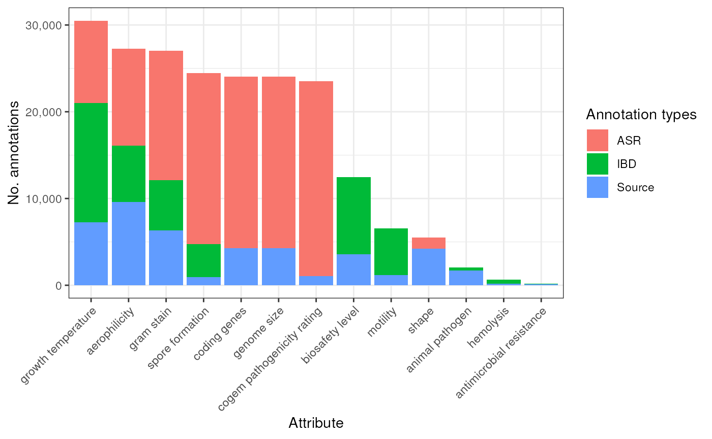
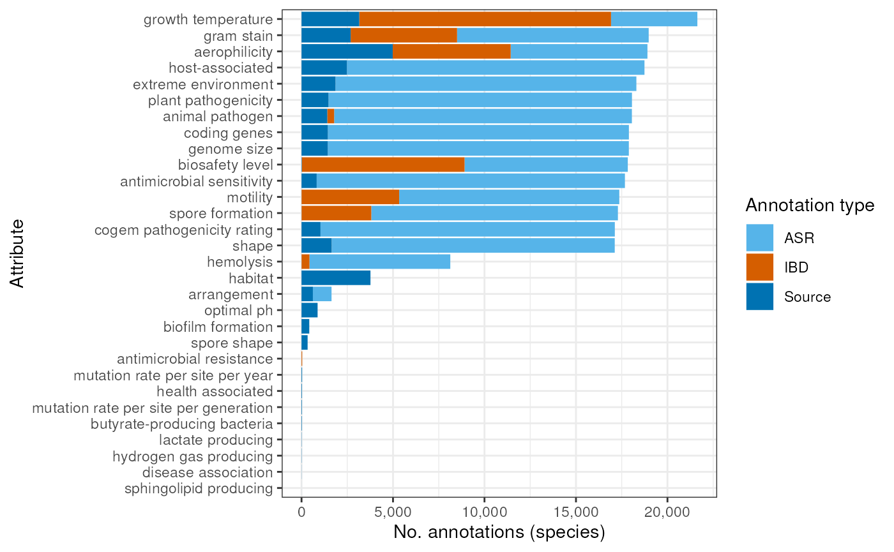
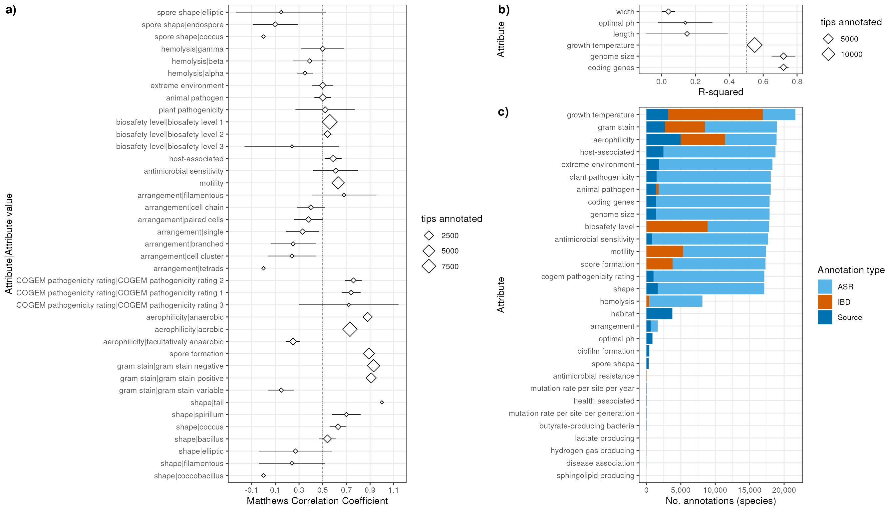
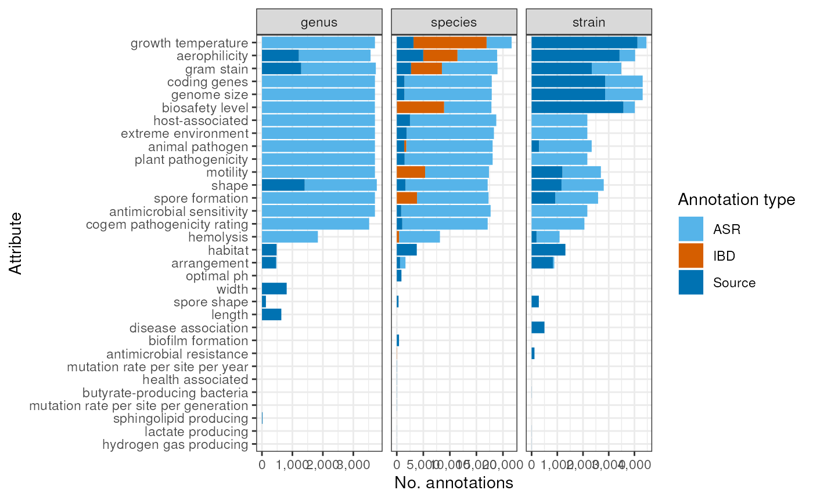

Data integration and stats
Source:vignettes/articles/data_integration_and_stats.Rmd
data_integration_and_stats.RmdLoad packages and import data
library(bugphyzzAnalyses)
library(bugphyzz)
library(dplyr)
library(taxPPro)
library(ggplot2)
library(forcats)
library(ggpubr)
library(taxPPro)
library(tidyr)
library(ComplexHeatmap)
library(purrr)
library(forcats)
library(ggbreak)
library(tibble)
library(patchwork)
library(grid)
library(cowplot)
bp <- importBugphyzz()Basic exploratory stats
Columns with NAs
df <- data.frame(
cols = colnames(bp),
n_na = unname(map_int(bp, ~ sum(is.na(.x))))
)
df |>
ggplot(aes(cols, n_na)) +
geom_col() +
labs(
y = 'NA count', x = 'Column name',
title = 'NA count per column in the main bupphyzz import'
) +
scale_y_continuous(labels = scales::comma) +
theme_bw() +
theme(
axis.text.x = element_text(angle = 45, hjust = 1)
)
Evidence
bp |>
count(Evidence) |>
ggplot(aes(reorder(Evidence, desc(n)), n)) +
geom_col() +
labs(
x = 'Evidence', y = 'Annotaions count'
) +
scale_y_continuous(limits = c(0, 2000000), labels = scales::comma) +
scale_y_cut(breaks = c(10000, 100000)) +
theme_bw() +
theme(
panel.grid.major.x = element_blank()
)
Frequency
bp |>
count(Frequency) |>
mutate(Frequency = fct_relevel(Frequency, 'always', 'usually', 'sometimes', 'rarely')) |>
ggplot(aes(Frequency, n)) +
geom_col() +
labs(
x = 'Frequency keywords', y = 'Count',
) +
scale_y_continuous(limits = c(0, 1e6), labels = scales::comma) +
scale_y_cut(breaks = c(100000)) +
theme_bw() +
theme(
panel.grid.major.y = element_blank()
)Histogram of scores
bp |>
ggplot(aes(Score)) +
geom_histogram(binwidth = 0.05) +
labs(
title = 'Distribution of scores in the main bugphyzz import',
x = 'Scores', y = 'Frequency'
) +
scale_y_continuous(labels = scales::comma) +
theme_bw()
By attribute group and rank
dims <- map_chr(dim(bp), ~ format(.x, big.mark = ','))
total_annotations <- paste0('Total annotations: ', dims[[1]])
valid_ranks <- c(
'domain', 'phylum', 'class', 'order', 'family', 'genus', 'species', 'strain'
)
attr_gp_rk_p <- bp |>
mutate(Rank = factor(Rank, levels = valid_ranks, ordered = FALSE)) |>
count(Attribute_group, Rank) |>
group_by(Attribute_group) |>
mutate(total = sum(n)) |>
ungroup() |>
ggplot(aes(reorder(Attribute_group, desc(total)), n)) +
geom_col(aes(fill = Rank)) +
labs(
x = 'Attribute group', y = '# annotations'
) +
# scale_y_continuous(limits = c(0, 130000), labels = scales::comma) +
scale_y_continuous(labels = scales::comma) +
scale_fill_brewer(type = 'qual', palette = 'Set2', direction = -1, name = '') +
# annotate("label", x = 25, y = 100000, label = total_annotations) +
# guides(fill = guide_legend(nrow = 1)) +
# scale_y_cut(breaks = 1000) +
theme_bw() +
theme(
axis.text.x = element_text(angle = 45, hjust = 1)
# legend.position = 'bottom'
)
attr_gp_rk_p
By attribute group and evidence
evidence_code <- c('asr', 'inh', 'tas', 'nas', 'igc', 'exp')
atr_gp_ev_p <- bp |>
mutate(Evidence = factor(Evidence, levels = evidence_code, ordered = FALSE)) |>
count(Attribute_group, Evidence) |>
group_by(Attribute_group) |>
mutate(total = sum(n)) |>
ungroup() |>
ggplot(aes(reorder(Attribute_group, desc(total)), n)) +
geom_col(aes(fill = Evidence)) +
labs(
x = 'Attribute group', y = '# annotations'
) +
# scale_y_continuous(limits = c(0, 130000), labels = scales::comma) +
scale_y_continuous(labels = scales::comma) +
scale_fill_brewer(type = 'qual', palette = 'Set2', direction = 1, name = '') +
# annotate("label", x = 25, y = 100000, label = total_annotations) +
# guides(fill = guide_legend(nrow = 1)) +
# scale_y_cut(breaks = 1000) +
theme_bw() +
theme(
axis.text.x = element_text(angle = 45, hjust = 1),
legend.position = 'right'
)
atr_gp_ev_p
By attribute group and frequency
freq_code <- c('always', 'usually', 'sometimes', 'rarely')
atr_gp_fr_p <- bp |>
mutate(Frequency = factor(Frequency, levels = freq_code, ordered = FALSE)) |>
count(Attribute_group, Frequency) |>
group_by(Attribute_group) |>
mutate(total = sum(n)) |>
ungroup() |>
ggplot(aes(reorder(Attribute_group, desc(total)), n)) +
geom_col(aes(fill = Frequency)) +
# + guides(colour = guide_legend(nrow = 1))annotate("label", x = 25, y = 100000, label = total_annotations) +
# guides(fill = guide_legend(nrow = 1)) +
labs(
x = 'Attribute group', y = '# annotations'
) +
# scale_y_continuous(limits = c(0, 130000), labels = scales::comma) +
scale_y_continuous(labels = scales::comma) +
scale_fill_brewer(type = 'qual', palette = 'Set2', direction = 1, name = '') +
# scale_y_cut(breaks = 1000) +
theme_bw() +
theme(
axis.text.x = element_text(angle = 45, hjust = 1),
legend.position = 'right'
)
atr_gp_fr_p
Number of attributes per attribute group
attr_n <- bp |>
select(Attribute_group, Attribute) |>
distinct() |>
count(Attribute_group) |>
arrange(-n) |>
mutate(
bin = ifelse(n > 2, 'Multi-categorical', 'Binary*')
) |>
mutate(bin = fct_relevel(bin, 'Multi-categorical'))
attr_n_p <- attr_n |>
ggplot(aes(reorder(Attribute_group, desc(n)), n)) +
geom_col(aes(fill = bin)) +
scale_y_continuous(
limits = c(0, 95), breaks = seq(0, 95, 30)
) +
labs(
x = 'Attribute group', y = '# attributes\n\n'
) +
scale_fill_discrete(name = '') +
# guides(fill = guide_legend(nrow = 1)) +
theme_bw() +
theme(
axis.text.x = element_text(angle = 45, hjust = 1)
# legend.position = 'bottom'
# panel.grid.major.x = element_blank(),
)
attr_n_p
Number of annotations per taxon
freqs <- bp |>
filter(Rank %in% c('genus', 'species', 'strain')) |>
count(Rank, NCBI_ID)
freqs_p <- freqs |>
ggplot(aes(n)) +
geom_histogram(binwidth = 1) +
facet_wrap(~Rank, ncol = 1, scales = 'free') +
scale_y_continuous(labels = scales::comma) +
guides(fill = guide_legend(nrow = 1)) +
labs(
x = '# annotations per\ntaxon',
y = 'Frequency'
) +
theme_bw() +
theme(
legend.position = 'bottom'
)
freqs_p
layout <- '
AAAAC
AAAAC
AAAAC
AAAAC
BBBBC
BBBB#
'
p <- attr_gp_rk_p + attr_n_p + freqs_p +
plot_layout(design = layout, guides = 'keep') +
plot_annotation(tag_levels = 'a', tag_suffix = ')')
# theme(plot.tag = element_text(size = 8))
# ggsave('basic_stats.png', width = 12.5, height = 8.7, units = 'in')
p
Source and propagation
bp_source <- filter(bp, !is.na(Attribute_source))
unique_sources <- bp_source |>
filter(Evidence %in% c('exp', 'igc', 'tas', 'nas')) |>
pull(Attribute_source) |>
unique() |>
strsplit(';') |>
unlist() |>
unique() |>
sort()
n_sources <- length(unique_sources)
n_sources
#> [1] 14Number of annotations per source (including propagation)
Here, inheritance and asr are treated as two separate and new sources. Note that the majority of annotations actually come from the propagation.
summary_source <- bp |>
mutate(
Attribute_source = ifelse(
is.na(Attribute_source), Evidence, Attribute_source
)
) |>
mutate(
Attribute_source = case_when(
Attribute_source == 'inh' ~ 'Inheritance',
Attribute_source == 'asr' ~ 'ASR',
TRUE ~ Attribute_source
)
) |>
filter(!grepl(';', Attribute_source)) |> # remove repeated annotations for now
count(Attribute_source) |>
arrange(-n) |>
mutate(
origin = case_when(
Attribute_source %in% c('ASR', 'Inheritance') ~ 'Propagation',
TRUE ~ 'Original source'
)
)
# head(10) # This is to get only the top 10 of the list
# summary_source
summary_source_p <- summary_source |>
mutate(origin = ifelse(origin == 'Original source', 'Source', origin)) |>
mutate(origin = fct_reorder(origin, desc(n))) |>
ggplot(aes(reorder(Attribute_source, -n), n)) +
geom_col(aes(fill = origin)) +
labs(
x = 'Source', y = 'Number of annotations'
) +
scale_y_continuous(limits = c(0, 1500000), labels = scales::comma) +
scale_y_cut(breaks = c(100, 20000)) +
scale_fill_discrete(name = '') +
theme_bw() +
theme(
axis.text.x = element_text(angle = 45, hjust = 1),
panel.grid.major.x = element_blank()
)
summary_source_p <- grid.grabExpr(print(summary_source_p))Completeness tables
valid_ranks2 <- c(
'superkingdom', 'phylum', 'class', 'order', 'family', 'order', 'genus',
'species', 'strain'
)
exclude_all_fname <- system.file(
'extdata/proc_exclude_all_07122023.txt', package = 'taxPPro',
mustWork = TRUE
)
exclude_all <- read.table(exclude_all_fname, col.names = 'taxid')
exclude_all$taxid <- as.character(exclude_all$taxid)
exclude_all$rank <- taxizedb::taxid2rank(exclude_all$taxid, db = 'ncbi')
exclude_all <- exclude_all[exclude_all$rank %in% valid_ranks2,]
strains_fname <- system.file(
'extdata/proc_strains_07122023.txt', package = 'taxPPro', mustWork = TRUE
)
strains <- read.table(strains_fname, col.names = 'taxid')
strains$taxid <- as.character(strains$taxid)
strains$rank <- taxizedb::taxid2rank(strains$taxid, db = 'ncbi')
strains <- strains[strains$rank == 'strain',]
reference_df <- rbind(exclude_all, strains)
reference_df$rank <- ifelse(reference_df$rank == 'superkingdom', 'domain', reference_df$rank)
reference_summary <- count(reference_df, rank)
colnames(reference_summary) <- c('Rank', 'ref')
reference <- split(reference_df, factor(reference_df$rank)) |>
lapply(function(x) unique(x$taxid))
lapply(reference, length)
#> $class
#> [1] 188
#>
#> $domain
#> [1] 2
#>
#> $family
#> [1] 897
#>
#> $genus
#> [1] 5334
#>
#> $order
#> [1] 387
#>
#> $phylum
#> [1] 224
#>
#> $species
#> [1] 26155
#>
#> $strain
#> [1] 42335
inSet <- function(x, ref) {
s <- split(x, x$Rank)
s <- lapply(s, function(x) x$NCBI_ID)
output <- vector('list', length(s))
for (i in seq_along(output)) {
ref_taxids <- unique(ref[[names(s)[i]]])
target_taxids <- unique(s[[i]])
output[[i]] <- sum(target_taxids %in% ref_taxids)
names(output)[i] <- names(s)[i]
}
data.frame(
Rank = names(output),
inset = unlist(output, use.names = FALSE)
)
}
outSet <- function(x, ref) {
s <- split(x, x$Rank)
s <- lapply(s, function(x) x$NCBI_ID)
output <- vector('list', length(s))
for (i in seq_along(output)) {
ref_taxids <- unique(ref[[names(s)[i]]])
target_taxids <- unique(s[[i]])
output[[i]] <- sum(!target_taxids %in% ref_taxids)
names(output)[i] <- names(s)[i]
}
data.frame(
Rank = names(output),
outset = unlist(output, use.names = FALSE)
)
}Completenes table before propgation
inset_before <- original |>
{\(y) split(y, factor(y$Attribute_group))}() |>
map(inSet, reference) |>
bind_rows(.id = 'Attribute_group')
outset_before <- original |>
{\(y) split(y, factor(y$Attribute_group))}() |>
map(outSet, reference) |>
bind_rows(.id = 'Attribute_group')
completeness_before <- left_join(inset_before, outset_before, by = c('Attribute_group', 'Rank')) |>
left_join(reference_summary, by = 'Rank') |>
mutate(completeness = (inset / ref) * 100)
DT::datatable(completeness_before)Completeness table after propagation
inset_after <- bp |>
{\(y) split(y, factor(y$Attribute_group))}() |>
map(inSet, reference) |>
bind_rows(.id = 'Attribute_group')
outset_after <- bp |>
{\(y) split(y, factor(y$Attribute_group))}() |>
map(outSet, reference) |>
bind_rows(.id = 'Attribute_group')
completeness_after <- left_join(inset_after, outset_after, by = c('Attribute_group', 'Rank')) |>
left_join(reference_summary, by = 'Rank') |>
mutate(completeness = (inset / ref) * 100)
DT::datatable(completeness_after)Completenes heatmaps
ordered_rownames <- bp |>
filter(Attribute_group != 'antimicrobial resistance') |>
count(Attribute_group) |>
arrange(-n) |>
pull(Attribute_group)
## Create matrices
completeness_mat_before <- completeness_before |>
select(Attribute_group, Rank, completeness) |>
pivot_wider(
names_from = Rank, values_from = completeness, values_fill = 0
) |>
column_to_rownames(var = 'Attribute_group') |>
relocate(strain, species, genus) |>
as.matrix()
completeness_mat_after <- completeness_after |>
# filter(Attribute_group != 'antimicrobial sensitivity') |>
filter(Attribute_group != 'antimicrobial resistance') |>
select(Attribute_group, Rank, completeness) |>
pivot_wider(
names_from = Rank, values_from = completeness, values_fill = 0
) |>
column_to_rownames(var = 'Attribute_group') |>
relocate(
strain, species, genus, family, order, class, phylum, domain
) |>
as.matrix()
## Create heatmaps
color_fun <- circlize::colorRamp2(
breaks = c(0, 100), colors = c('white', 'brown')
)
lgd <- Legend(col_fun = color_fun, title = "Completeness")
ht_b <- Heatmap(
matrix = completeness_mat_before[ordered_rownames,],
cluster_rows = FALSE, cluster_columns = FALSE,
row_names_side = 'left',
show_heatmap_legend = FALSE,
col = color_fun,
column_title = "BP",
row_names_max_width = max_text_width(
rownames(completeness_mat_before),
gp = gpar(fontsize = 12)
)
# cell_fun = function(j, i, x, y, width, height, fill) {
# grid.rect(x = x, y = y, width = width, height = height,
# gp = gpar(col = "black", fill = NA))
# }
)
ht_a <- Heatmap(
matrix = completeness_mat_after[ordered_rownames,],
cluster_rows = FALSE, cluster_columns = FALSE,
row_names_side = 'left',
name = 'Completeness',
heatmap_legend_param = list(
at = c(0, 50, 100)
),
col = color_fun,
column_title = "AP",
row_names_max_width = max_text_width(
rownames(completeness_mat_after),
gp = gpar(fontsize = 12)
)
# cell_fun = function(j, i, x, y, width, height, fill) {
# grid.rect(x = x, y = y, width = width, height = height,
# gp = gpar(col = "black", fill = NA))
# }
)
## Combine heatmaps
ht <- grid.grabExpr(
draw(ht_b + ht_a, ht_gap = unit(0.4, "cm"))
)Combined plot
p2 <- plot_grid(
summary_source_p, ht,
labels = c('a)', 'b)'),
ncol = 1,
rel_heights = c(0.38, 0.62)
)
# ggsave("completeness.png", plot = p2, width = 6.15, height = 9.68, units = 'in')
p2
Relationship between initial ammount of annotations and magnitude of propagation
cols <- c('Attribute_group', 'Rank', 'completeness')
x <- completeness_before |>
select(all_of(cols)) |>
rename(comp_bef = completeness) |>
complete(Attribute_group, Rank, fill = list(comp_bef = 0))
y <- completeness_after |>
select(all_of(cols)) |>
rename(comp_aft = completeness)
original_summary <- original |>
count(Attribute_group)
z <- left_join(x, y, by = c('Attribute_group', 'Rank')) |>
mutate(ratio = log((comp_aft + 1) / (comp_bef + 1))) |>
left_join(original_summary, by = 'Attribute_group') |>
arrange(n, Attribute_group) |>
mutate(Attribute_group = fct_inorder(Attribute_group))
p9 <- z |>
ggplot(aes(Attribute_group, ratio)) +
# geom_point(aes(size = comp_bef), shape = 1, alpha = 0.5) +
geom_point(aes(size = comp_bef, fill = n), shape = 21, alpha = 0.5) +
facet_wrap(~Rank, nrow = 1) +
labs(
x = 'Attribute group',
y = 'log2(completeness after propagation + 1 / completeness before propagation + 1) per rank'
) +
scale_fill_viridis_c(name = 'Total starting\nnumber of\nannotations') +
scale_size(name = 'Completeness\nbefore propagation\nper rank') +
theme_bw() +
coord_flip()
ggsave(
filename = 'sup2.png',
plot = p9,
units = c('in'),
width = 9.4,
height = 6.1
)
p9
#> Add confidence of annotations for this figure. #> Discuss the meaning of the inference. #> Hold out validation. Choose random annotations (10% ~30-100x). Cross-validation. #> Hold out positives and negatives. #> One rank or physiology at at a time. #> Look for a citation for method implemented for validation. #> Check Mathews Correlation coefficient for balanced/unbalanced prediction. Matthews correlation coefficient #> Try different tissues.
Dispersion of sources
Import bugphyzz data before propagation and before resolving conflicts, agreements, and double annotations.
data <- original |>
count(Attribute_group, Attribute_source, Rank) |>
mutate(new_column = paste0(Attribute_group, '|', Rank)) |>
select(new_column, Attribute_source, n) |>
pivot_wider(
names_from = 'Attribute_source', values_from = 'n', values_fill = 0
) |>
arrange(new_column) |>
tibble::column_to_rownames(var = 'new_column') |>
as.matrix()
bar_vct <- sub('^.*\\|', '', rownames(data))
split_vct <- sub('\\|.*$', '', rownames(data))
bar_color <- viridis::viridis(n = 3, option = 'C')
names(bar_color) <- c('genus', 'species', 'strain')
row_ha <- rowAnnotation(
'Rank' = bar_vct, col = list(Rank = bar_color),
show_annotation_name = FALSE
)
# log2_data <- log2(data + 1)
data[data > 0] <- 1
color_fun2 <- circlize::colorRamp2(
breaks = c(0, 1), colors = c('white', 'black')
)
ht_sources <- Heatmap(
matrix = data,
cluster_rows = FALSE, cluster_columns = FALSE,
show_row_names = FALSE,
row_names_side = 'left',
name = 'Presence/ausence',
show_heatmap_legend = TRUE,
col = color_fun2(c(0, 1)),
left_annotation = row_ha,
row_split = split_vct,
column_names_rot = 45,
row_title_rot = 0, gap = unit(0.1, 'inches'),
cell_fun = function(j, i, x, y, width, height, fill) {
grid.rect(x = x, y = y, width = width, height = height,
gp = gpar(col = "black", fill = NA))
}
)
# png(filename = 'sup3.png', width = 10, height = 11, units = 'in', res = 300)
# draw(ht_sources)
# dev.off()
ht_sources
Paragraph
Some calculation for paragraphs
bp_subset <- bp |>
filter(
!(Frequency == 'unknown' & Evidence %in% c('asr', 'inh'))
)
n_annotations <- nrow(bp_subset)
n_unique_taxa <- length(unique(bp_subset$NCBI_ID))
n_unique_attr <- length(unique(bp_subset$Attribute))
n_unique_attr_grp <- length(unique(bp_subset$Attribute_group))
n_annotations_sources <- bp_subset |>
filter(!Evidence %in% c('asr', 'inh')) |>
nrow()
n_annotations_propagation <- bp_subset |>
filter(Evidence %in% c('asr', 'inh')) |>
nrow()
n_annotations
#> [1] 1599662bugphyzz contains a total of 1,599,662 annotations, 75,471 unique taxa, 245 unique attributes, and 33 unique attributes groups (traits). 55,534 (3 %) annotations come directly from 14 public sources and the remaining 1,544,128 (97 %) were inferred with our taxonomic propagation approach (see the ‘taxonomic propagation’ section in methods), increasing our completeness from an average per taxonomic rank of *** to *** % (Fig. ***).
Session information
sessioninfo::session_info()
#> ─ Session info ───────────────────────────────────────────────────────────────
#> setting value
#> version R version 4.3.0 (2023-04-21)
#> os Ubuntu 22.04.2 LTS
#> system x86_64, linux-gnu
#> ui X11
#> language en
#> collate en_US.UTF-8
#> ctype en_US.UTF-8
#> tz Etc/UTC
#> date 2023-08-15
#> pandoc 2.19.2 @ /usr/local/bin/ (via rmarkdown)
#>
#> ─ Packages ───────────────────────────────────────────────────────────────────
#> package * version date (UTC) lib source
#> abind 1.4-5 2016-07-21 [1] RSPM (R 4.3.0)
#> aplot 0.2.0 2023-08-09 [1] RSPM (R 4.3.0)
#> backports 1.4.1 2021-12-13 [1] RSPM (R 4.3.0)
#> BiocFileCache 2.8.0 2023-04-25 [1] Bioconductor
#> BiocGenerics 0.46.0 2023-04-25 [1] Bioconductor
#> bit 4.0.5 2022-11-15 [1] RSPM (R 4.3.0)
#> bit64 4.0.5 2020-08-30 [1] RSPM (R 4.3.0)
#> blob 1.2.4 2023-03-17 [1] RSPM (R 4.3.0)
#> bold 1.3.0 2023-05-02 [1] RSPM (R 4.3.0)
#> broom 1.0.5 2023-06-09 [1] RSPM (R 4.3.0)
#> bslib 0.5.1 2023-08-11 [1] RSPM (R 4.3.0)
#> bugphyzz * 0.0.1.3 2023-08-15 [1] Github (waldronlab/bugphyzz@3ad61e6)
#> bugphyzzAnalyses * 0.1.0 2023-08-15 [1] local
#> cachem 1.0.8 2023-05-01 [1] RSPM (R 4.3.0)
#> Cairo 1.6-0 2022-07-05 [1] RSPM (R 4.3.0)
#> car 3.1-2 2023-03-30 [1] RSPM (R 4.3.0)
#> carData 3.0-5 2022-01-06 [1] RSPM (R 4.3.0)
#> circlize 0.4.15 2022-05-10 [1] RSPM (R 4.3.0)
#> cli 3.6.1 2023-03-23 [1] RSPM (R 4.3.0)
#> clue 0.3-64 2023-01-31 [1] RSPM (R 4.3.0)
#> cluster 2.1.4 2022-08-22 [2] CRAN (R 4.3.0)
#> codetools 0.2-19 2023-02-01 [2] CRAN (R 4.3.0)
#> colorspace 2.1-0 2023-01-23 [1] RSPM (R 4.3.0)
#> ComplexHeatmap * 2.16.0 2023-04-25 [1] Bioconductor
#> conditionz 0.1.0 2019-04-24 [1] RSPM (R 4.3.0)
#> cowplot * 1.1.1 2020-12-30 [1] RSPM (R 4.3.0)
#> crayon 1.5.2 2022-09-29 [1] RSPM (R 4.3.0)
#> crosstalk 1.2.0 2021-11-04 [1] RSPM (R 4.3.0)
#> crul 1.4.0 2023-05-17 [1] RSPM (R 4.3.0)
#> curl 5.0.1 2023-06-07 [1] RSPM (R 4.3.0)
#> data.table 1.14.8 2023-02-17 [1] RSPM (R 4.3.0)
#> DBI 1.1.3 2022-06-18 [1] RSPM (R 4.3.0)
#> dbplyr 2.3.3 2023-07-07 [1] RSPM (R 4.3.0)
#> desc 1.4.2 2022-09-08 [1] RSPM (R 4.3.0)
#> digest 0.6.33 2023-07-07 [1] RSPM (R 4.3.0)
#> doParallel 1.0.17 2022-02-07 [1] RSPM (R 4.3.0)
#> dplyr * 1.1.2 2023-04-20 [1] RSPM (R 4.3.0)
#> DT 0.28 2023-05-18 [1] RSPM (R 4.3.0)
#> ellipsis 0.3.2 2021-04-29 [1] RSPM (R 4.3.0)
#> evaluate 0.21 2023-05-05 [1] RSPM (R 4.3.0)
#> fansi 1.0.4 2023-01-22 [1] RSPM (R 4.3.0)
#> farver 2.1.1 2022-07-06 [1] RSPM (R 4.3.0)
#> fastmap 1.1.1 2023-02-24 [1] RSPM (R 4.3.0)
#> filelock 1.0.2 2018-10-05 [1] RSPM (R 4.3.0)
#> forcats * 1.0.0 2023-01-29 [1] RSPM (R 4.3.0)
#> foreach 1.5.2 2022-02-02 [1] RSPM (R 4.3.0)
#> fs 1.6.3 2023-07-20 [1] RSPM (R 4.3.0)
#> generics 0.1.3 2022-07-05 [1] RSPM (R 4.3.0)
#> GetoptLong 1.0.5 2020-12-15 [1] RSPM (R 4.3.0)
#> ggbreak * 0.1.2 2023-06-26 [1] RSPM (R 4.3.0)
#> ggfun 0.1.2 2023-08-09 [1] RSPM (R 4.3.0)
#> ggplot2 * 3.4.2 2023-04-03 [1] RSPM (R 4.3.0)
#> ggplotify 0.1.2 2023-08-09 [1] RSPM (R 4.3.0)
#> ggpubr * 0.6.0 2023-02-10 [1] RSPM (R 4.3.0)
#> ggsignif 0.6.4 2022-10-13 [1] RSPM (R 4.3.0)
#> GlobalOptions 0.1.2 2020-06-10 [1] RSPM (R 4.3.0)
#> glue 1.6.2 2022-02-24 [1] RSPM (R 4.3.0)
#> gridExtra 2.3 2017-09-09 [1] RSPM (R 4.3.0)
#> gridGraphics 0.5-1 2020-12-13 [1] RSPM (R 4.3.0)
#> gtable 0.3.3 2023-03-21 [1] RSPM (R 4.3.0)
#> highr 0.10 2022-12-22 [1] RSPM (R 4.3.0)
#> hms 1.1.3 2023-03-21 [1] RSPM (R 4.3.0)
#> hoardr 0.5.3 2023-01-26 [1] RSPM (R 4.3.0)
#> htmltools 0.5.6 2023-08-10 [1] RSPM (R 4.3.0)
#> htmlwidgets 1.6.2 2023-03-17 [1] RSPM (R 4.3.0)
#> httpcode 0.3.0 2020-04-10 [1] RSPM (R 4.3.0)
#> httr 1.4.6 2023-05-08 [1] RSPM (R 4.3.0)
#> IRanges 2.34.1 2023-06-22 [1] Bioconductor
#> iterators 1.0.14 2022-02-05 [1] RSPM (R 4.3.0)
#> jquerylib 0.1.4 2021-04-26 [1] RSPM (R 4.3.0)
#> jsonlite 1.8.7 2023-06-29 [1] RSPM (R 4.3.0)
#> knitr 1.43 2023-05-25 [1] RSPM (R 4.3.0)
#> labeling 0.4.2 2020-10-20 [1] RSPM (R 4.3.0)
#> lifecycle 1.0.3 2022-10-07 [1] RSPM (R 4.3.0)
#> magrittr 2.0.3 2022-03-30 [1] RSPM (R 4.3.0)
#> matrixStats 1.0.0 2023-06-02 [1] RSPM (R 4.3.0)
#> memoise 2.0.1 2021-11-26 [1] RSPM (R 4.3.0)
#> mgsub 1.7.3 2021-07-28 [1] RSPM (R 4.3.0)
#> munsell 0.5.0 2018-06-12 [1] RSPM (R 4.3.0)
#> patchwork * 1.1.2 2022-08-19 [1] RSPM (R 4.3.0)
#> pillar 1.9.0 2023-03-22 [1] RSPM (R 4.3.0)
#> pkgconfig 2.0.3 2019-09-22 [1] RSPM (R 4.3.0)
#> pkgdown 2.0.7 2022-12-14 [1] RSPM (R 4.3.0)
#> png 0.1-8 2022-11-29 [1] RSPM (R 4.3.0)
#> purrr * 1.0.2 2023-08-10 [1] RSPM (R 4.3.0)
#> R6 2.5.1 2021-08-19 [1] RSPM (R 4.3.0)
#> ragg 1.2.5 2023-01-12 [1] RSPM (R 4.3.0)
#> rappdirs 0.3.3 2021-01-31 [1] RSPM (R 4.3.0)
#> RColorBrewer 1.1-3 2022-04-03 [1] RSPM (R 4.3.0)
#> readr 2.1.4 2023-02-10 [1] RSPM (R 4.3.0)
#> rjson 0.2.21 2022-01-09 [1] RSPM (R 4.3.0)
#> rlang 1.1.1 2023-04-28 [1] RSPM (R 4.3.0)
#> rmarkdown 2.23 2023-07-01 [1] RSPM (R 4.3.0)
#> rprojroot 2.0.3 2022-04-02 [1] RSPM (R 4.3.0)
#> RSQLite 2.3.1 2023-04-03 [1] RSPM (R 4.3.0)
#> rstatix 0.7.2 2023-02-01 [1] RSPM (R 4.3.0)
#> S4Vectors 0.38.1 2023-05-02 [1] Bioconductor
#> sass 0.4.7 2023-07-15 [1] RSPM (R 4.3.0)
#> scales 1.2.1 2022-08-20 [1] RSPM (R 4.3.0)
#> sessioninfo 1.2.2 2021-12-06 [1] RSPM (R 4.3.0)
#> shape 1.4.6 2021-05-19 [1] RSPM (R 4.3.0)
#> stringi 1.7.12 2023-01-11 [1] RSPM (R 4.3.0)
#> stringr 1.5.0 2022-12-02 [1] RSPM (R 4.3.0)
#> systemfonts 1.0.4 2022-02-11 [1] RSPM (R 4.3.0)
#> taxa 0.4.2 2022-04-12 [1] RSPM (R 4.3.0)
#> taxize 1.0 2023-08-15 [1] Github (ropensci/taxize@bcff2a6)
#> taxizedb 0.3.1 2023-04-03 [1] RSPM (R 4.3.0)
#> taxPPro * 0.1.0 2023-08-15 [1] Github (sdgamboa/taxPPro@d2b4c6f)
#> textshaping 0.3.6 2021-10-13 [1] RSPM (R 4.3.0)
#> tibble * 3.2.1 2023-03-20 [1] RSPM (R 4.3.0)
#> tidyr * 1.3.0 2023-01-24 [1] RSPM (R 4.3.0)
#> tidyselect 1.2.0 2022-10-10 [1] RSPM (R 4.3.0)
#> tzdb 0.4.0 2023-05-12 [1] RSPM (R 4.3.0)
#> utf8 1.2.3 2023-01-31 [1] RSPM (R 4.3.0)
#> uuid 1.1-0 2022-04-19 [1] RSPM (R 4.3.0)
#> vctrs 0.6.3 2023-06-14 [1] RSPM (R 4.3.0)
#> viridis 0.6.4 2023-07-22 [1] RSPM (R 4.3.0)
#> viridisLite 0.4.2 2023-05-02 [1] RSPM (R 4.3.0)
#> vroom 1.6.3 2023-04-28 [1] RSPM (R 4.3.0)
#> withr 2.5.0 2022-03-03 [1] RSPM (R 4.3.0)
#> xfun 0.40 2023-08-09 [1] RSPM (R 4.3.0)
#> xml2 1.3.5 2023-07-06 [1] RSPM (R 4.3.0)
#> yaml 2.3.7 2023-01-23 [1] RSPM (R 4.3.0)
#> yulab.utils 0.0.7 2023-08-09 [1] RSPM (R 4.3.0)
#>
#> [1] /usr/local/lib/R/site-library
#> [2] /usr/local/lib/R/library
#>
#> ──────────────────────────────────────────────────────────────────────────────